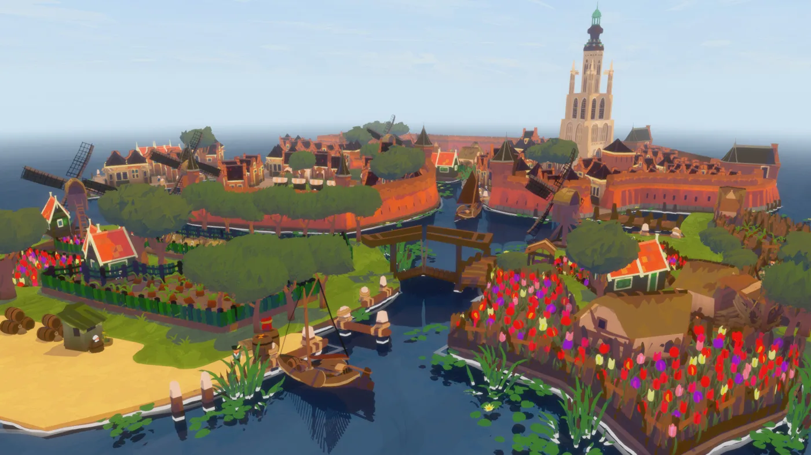
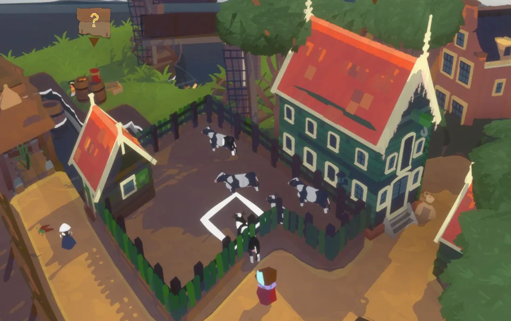
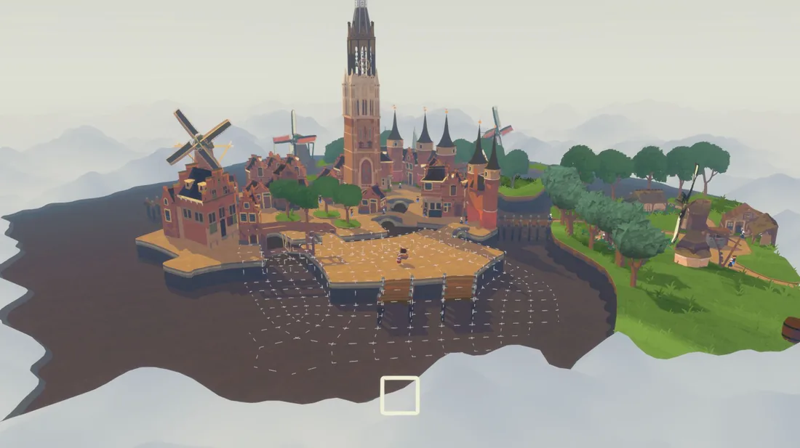
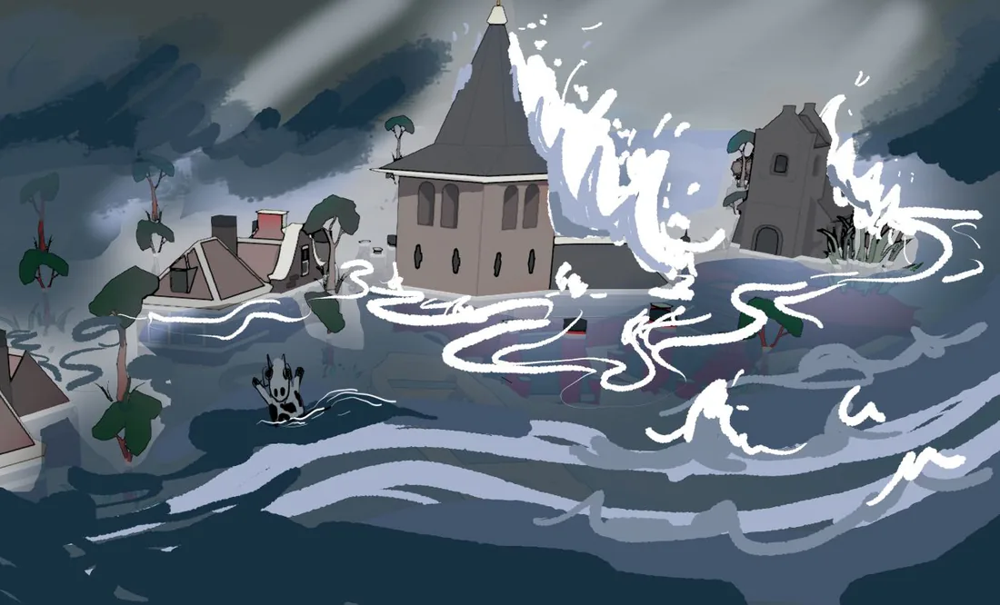
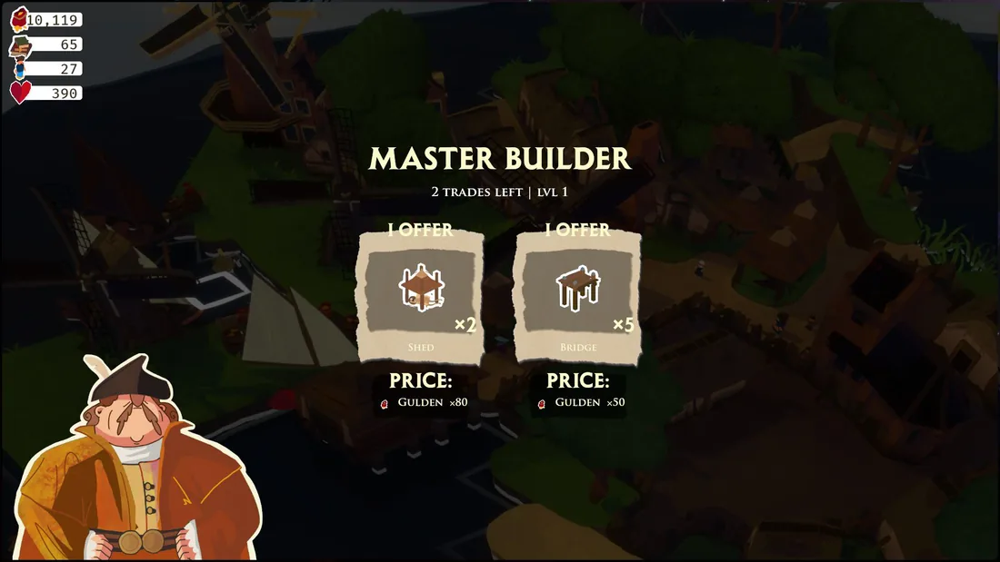
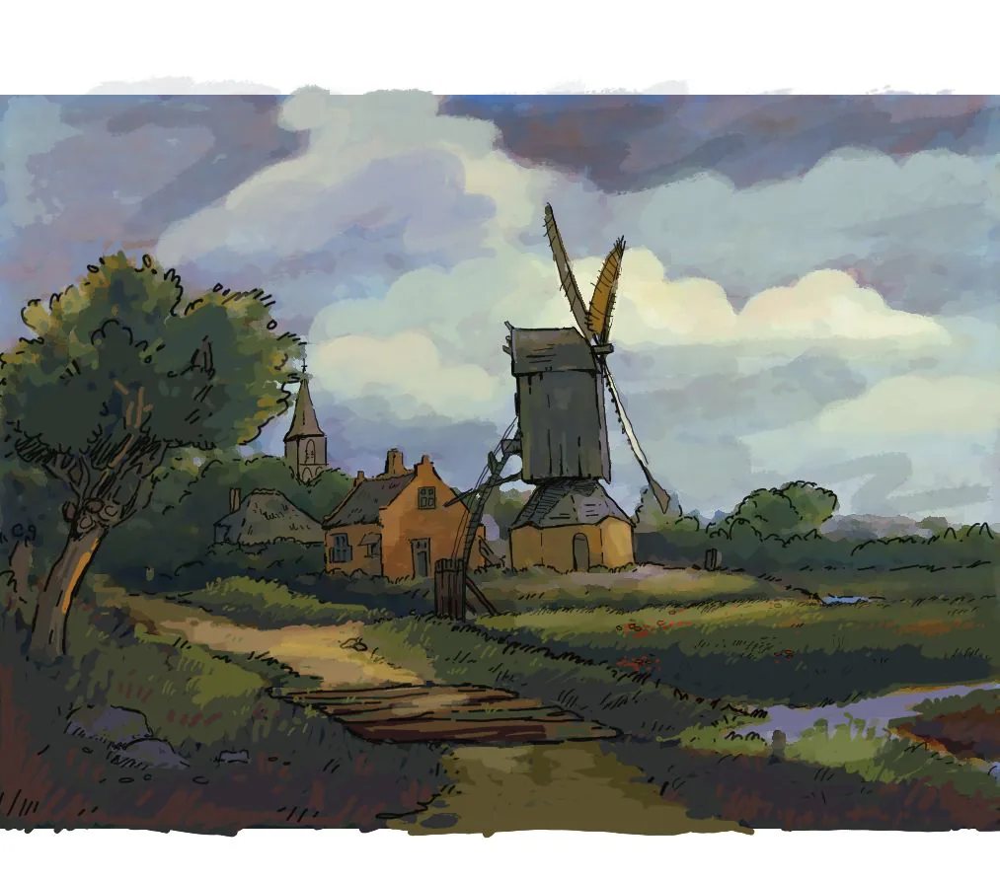
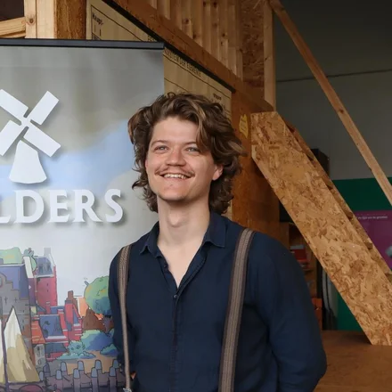
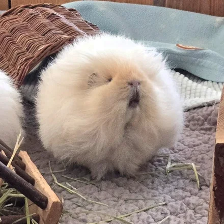

We made POLDERS to give players the Townscaper city builder they’ve been asking for, coated in an authentic Dutch world of tulips and storms.
About the game
POLDERS is a sandbox city builder in which you face the sea as a 17th-century Dutch Dike Master. Equipped with crooked canal houses and powerful windmills, you transform a swampy no-man’s land into a self-sustaining town bustling with trade.

POLDERS is a minimalist sandbox city builder inspired by Townscaper, Terra Nil and sandbox crafting games. After a terrible storm, players build dikes, windmills and sluices to hold back the sea, rebuilding their broken town into a proud 17th-century Dutch trading city.
Every building in the game is based on a real Dutch monument or on a painting by masters such as Vermeer, Van Ruisdael and Pieck, and the sea will strike mercilessly wherever players forget to check the dikes.
You are part of the town
POLDERS is one of the few city builders where you actually walk among the villagers. You start out farming and carrying goods from place to place, then discover buildings that automate buying, selling, farming and refining. By the end, your town runs itself: a bustling, fully automated trading city.
Build the Netherlands without noticing
Cities grow by draining enclosed water with windmills, creating what the Dutch call a polder. Canals improve houses, windmills want open land, and before players realise it they have recreated the Dutch landscape, block by block.
Features
-

Walk the world you build
Unlike traditional city builders, players walk through a fully explorable voxel world, placing and combining blocks to construct historically authentic buildings.
-

Strategy meets creativity
Enough depth for experienced players, and all the freedom in the world for creative casual players to build the Dutch landscape of their dreams.
-

Fight the sea
Build and maintain dikes, sluices and drainage windmills to keep the water at bay. Neglect your defences, and the sea will flood your settlement without mercy.
-

Trade & relationships
Trader ships bring a cast of characters, each with their own desires, offers and quests. Completing quests raises your reputation and unlocks new deals.
-

Dutch masters, real monuments
Every structure is modelled after a real Dutch national monument or a Golden Age painting, so players can visit their in-game buildings in real life. Hand-crafted models and shaders inspired by Van Ruisdael and Vermeer capture the Dutch light, vast skies and green meadows.
The studio
Make the world fall in love with games, make gamers fall in love with the world.
Geofront’s mission
Geofront B.V. was founded in Delft in 2024 by a team with backgrounds in architecture, geodesy and history. Driven by a desire to share the quintessential Dutch story of facing the sea with the world, the studio began development on POLDERS: a city builder rooted in the real landscapes, buildings and traditions of the Netherlands.
Drawing on extensive conversations with millers, farmers and cultural institutions, the team set out to make a game that strengthens players’ real-life connection to Dutch heritage rather than pulling them away from it.
Team

Jos FeenstraCo-founder · Creative director · Developer- Martin KoddeCo-founder · Business development · Finance
- Arend van BeerenCo-owner
- Danielle MaatArtist & designer
- Joost RolMusic & sound design
- Nathan DouenburgCultural expert
The publisher
POLDERS is published by Otter Worlds, a publisher of cozy and casual games. Otter Worlds works in transparent, respectful partnerships and leaves the developer full creative freedom over the game.
- Marlon MatthijssenMarketing & publishing producer
- Laura de LooffPublishing producer & business development

BertChief Floof Officer
Media
Click any image to inspect it at full size. All assets may be used for coverage of POLDERS.
Monetization permission
Geofront B.V. allows the contents of POLDERS to be published through video broadcasting services for any commercial or non-commercial purposes. Monetization of videos containing assets from POLDERS is legally and explicitly allowed by Geofront B.V.
About Geofront
Geofront B.V. makes games that enhance the player’s real-life experience rather than take them away from it. Inspired by the team’s backgrounds in architecture, geodesy and history, Geofront creates immersive experiences rooted in authenticity. Its debut title, POLDERS, is born from a wish to share the Dutch tale of facing the sea.